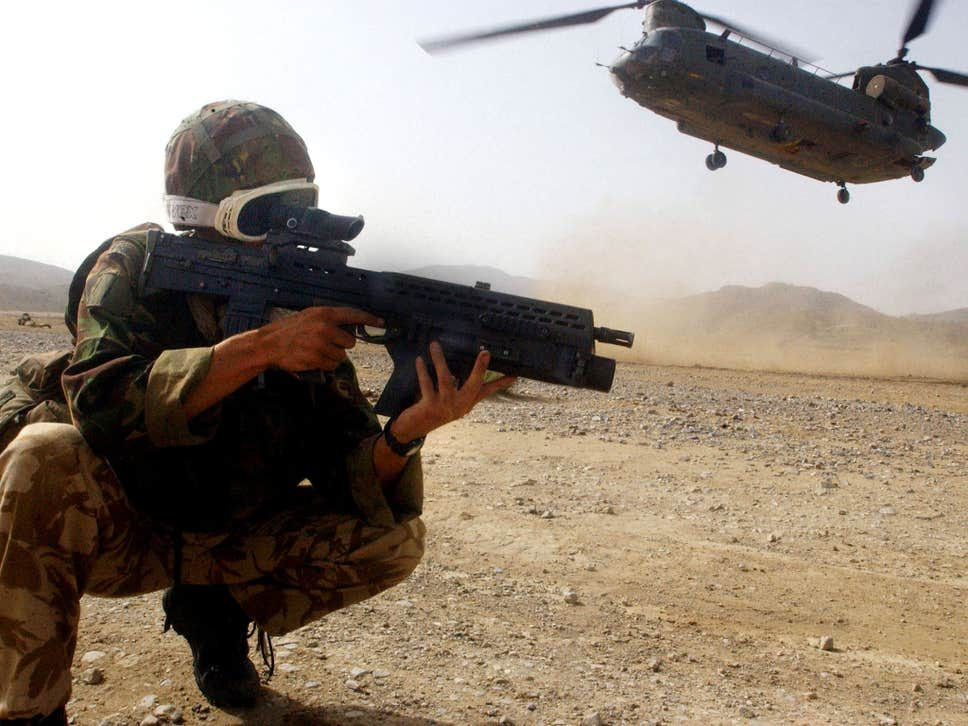
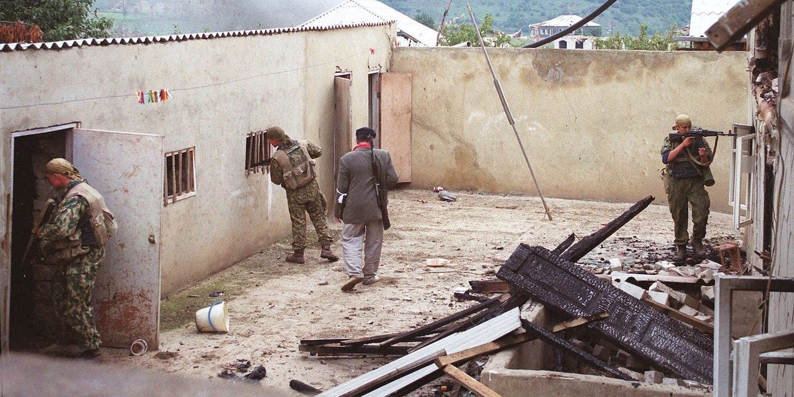
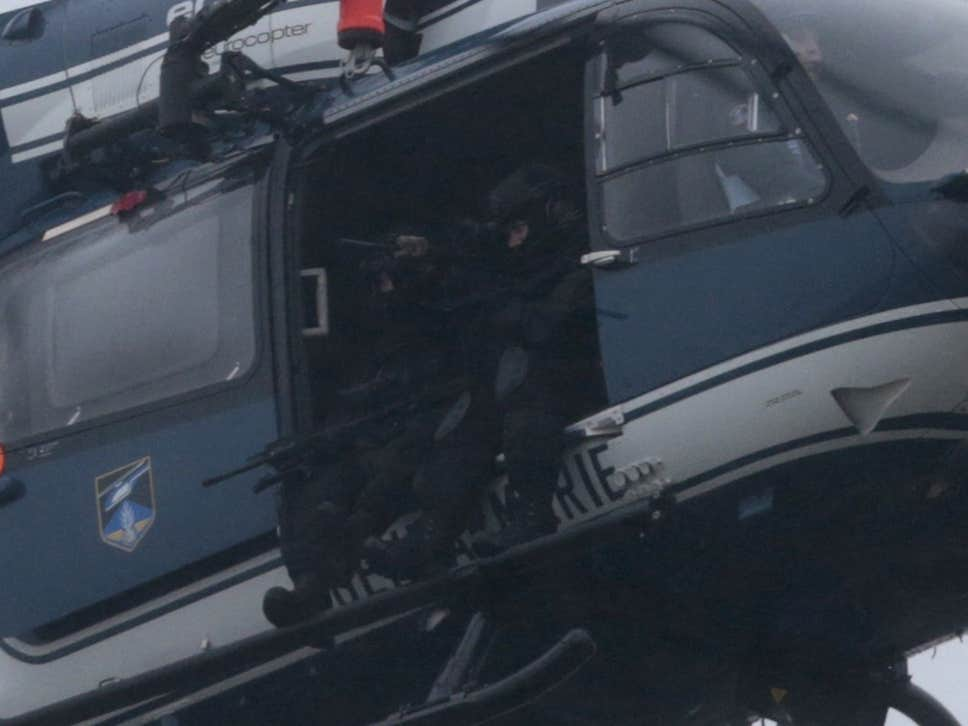
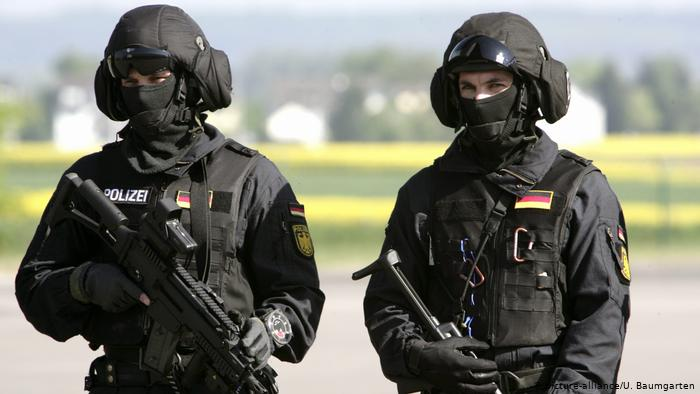
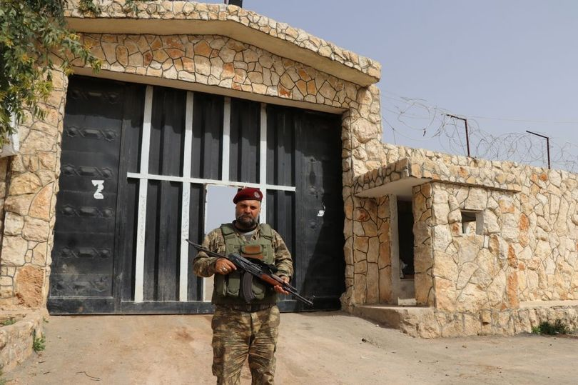

News
Armed special forces troops 'disguised as homeless people' deployed to British cities to combat terror threat
Home Office says record number of people arrested for terror-related offences in past year More ...

Here's how good Russia's Spetsnaz special operators are, according to a US Green Beret
In 2001, Mark Giaconia was a Green Beret patrolling the border areas between Kosovo and Serbia. More ...

It was responsible for storming the hijacked Air France flight in 1994
The GIGN – Groupe d’Intervention de la Gendarmerie Nationale More ...

The move is a reaction to ongoing terrorist threats in the capital.
Germany's elite police squad GSG 9, which deals with terrorist attacks, is to become significantly larger and will set up a second base in Berlin. More ...

The British Army's most elite special forces unit will reportedly be dispatched on 'kill or capture' raids as it is claimed almost 800 ISIS brides and their children escaped a camp near Raqqa
The SAS is prepared to conduct "kill or capture" missions to stop British jihadis escaping jail cells in Syria, reports have claimed. More ...